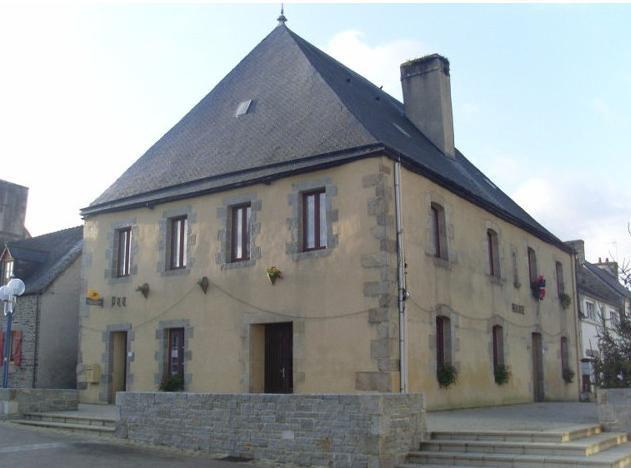

Retour au "Marquis de Guérand" du "Barzhaz""


|
MARKIZES GUERRAND I Markis Guerrand a lavare, P’oa chommet klanv war he wele : — Mar am bije liou ha paper, Am bije skrivet ul lizer ; Am bije skrivet ul lizer D’ar varkizes da dont d’ar gêr . . . . . . . . . . . . . . . . . . . . . . . . . . . . . . . . . . . . . . P’arruas al lizer gant-hi, ’Oa bars ar sal hoc’h ebati ; ’Oa bars ar sal hoc’h ebati, Peder dimezel oa gant-hi. N’oa ket gant-hi hanter lennet, Skabell d’azea d-eûs goulennet : — Laket dek a gezek euz ar c’harros, Ewit mont da Werrand fenoz ! II Ar varkizes a vonjoure, En kêr Benac’h pa arrue : — Demad d’ac’h-c’hui holl, Benac’his, Penoz ’ra ann aotro markis ? — Ni na omp ket bet en Guerrand ’Boe ann diwea paeamant. Ar varkizes a vonjoure En bourk Plegat pa arrue : Ar varkizes a vonjoure Bars en Guerrand pa arrue : — Demad d’ac’h-c’hui holl, Plegadis, Penoz ’ra ann aotro markis ? Demad ha joa holl en ti-ma, Ma fried paour pelec’h ema ? — Eman ’n he wele, hag hen klanv, Markizes, et-c’hui da vèd-han. Ar varkizes a vonjoure Bars ar gambr wenn pa arrue : — Pardon, emezhi, ma fried, O vea euz ar gêr sortiet. — N’eo ket d’ac’h da c’houlenn pardon, D’inn ma hunan hec’h eo, itron ; Me eo am eûs hoc’h offanset, P’am boa ac’hanoc’h chaseet. Ma fried paour, mar vec’h kontant, Me a rafe ma zestamant ? — Grêt ann testamant a garfet, ’Vel ma lârfet a vezo grêt. — Bars en Guerrand a vô savet Ur gouent newez, asuret, A vewo daouzek a baourienn, Euz a hirie da virwikenn. Iod-silet ’defo da greis-de, Kig ha soubenn diou-wez bemde ; Kig ha soubenn diou-wez bemde, Bara segal a vô mad d’hê. Daou-c’hant skoed ’roann da Dredrez, Daou-c’hant da Lok-Mikel-ann-trez, Un ogro newe d’ Blistinis, M’ho defo sonj euz ar markis ; Daou c’hant all da Lezividi (?) ’Blamour m’oann fondatour en-hi, Ha daou c’hant skoed da Blegadis, M’ho defo sonj euz ar markis. Etre Montroulez ha Guerrand, Me ’m eûs ur varkizes ha kant ; Kant skoed da bep-hini ann-hê D’ sikour sevel ho bugale ; D’ sikour sevel ho bugale, ’Balamour ma ’z on kiriek d’hê ; Ouspenn daou c’hant skoed da Sant-Iann, Ewit gallout merwel divlamm. — Ma fried paour, penoz ’rinn-me. Me a zo brema dibourve ? — Dalet, itron, ann alc’houeo, Ha digorret ann tensorio ; Ha digorret ann tensorio N’hoc’h eûs gwelet tric’houec’h bloaz ’zo ! Souezet ’oe ar varkizes, Ann tensorio pa zigorres, O welet ann aour, ann arc’hant A oa o chomm bars en Guerrand ; ’Welet ann arc’hant hag ann aour A oa bars en Guerrand o chomm ! Kanet gant ar vates hostaleri, En bourk Plegat-Guerrand. — 1863. |
LA MARQUISE DE GUERAND I Le marquis de Guérand disait, Quand il resta malade sur son lit : - Si j’avais du papier et de l’encre, J’aurais écrit une lettre ; J’aurais écrit une lettre, (Pour dire) à la marquise de venir à la maison. . . . . . . . . . . . . . . . . . . . . . . . . . . . . . . . . . . . . . . . . . . . . . . . . . . Quand la lettre lui arriva, Elle était dans la salle, à prendre ses ébats ; Elle était dans la salle, à prendre ses ébats, Quatre jeunes demoiselles (étaient) avec elle. Elle ne l’avait pas à moitié lue, Qu’elle demanda un escabeau pour s’asseoir : — Attelez dix chevaux au carrosse, Pour aller à Guérand, cette nuit. II La marquise souhaitait le bonjour, En arrivant dans la ville de Belle-Isle : — Bonjour à vous, habitants de Belle-Isle, Comment va monseigneur le marquis ? — Nous n’avons pas été à Guérand, Depuis le dernier paiement. La marquise souhaitait le bonjour, En arrivant au bourg de Ploegat : La marquise souhaitait le bonjour En arrivant à Guérand : — Bonjour à vous tous, habitants de Ploegat, Comment va monseigneur le marquis ? — Bonjour et joie à tous dans cette maison, Mon pauvre mari où est-il ? — Il est dans son lit, malade, Marquise, allez auprès de lui. La marquise souhaitait le bonjour, En arrivant dans la chambre blanche : — Pardon, dit-elle, mon mari, Pour avoir quitté la maison. — Ce n’est pas à vous de demander pardon, Mais à moi-même, madame ; C’est moi qui vous ai offensée, Quand je vous chassai. Ma pauvre femme, si vous étiez contente, Je ferais mon testament ? — Faites le testament que vous voudrez, Comme vous direz il sera fait. — A Guérand sera bâti Un couvent, neuf, en assurance, Et il y aura douze pauvres, D’aujourd’hui à jamais. Ils auront de la bouillie passée au crible, à midi. De la viande et de la soupe deux fois par jour ; De la viande et de la soupe deux fois par jour, Du pain de seigle sera bon pour eux. Je donne deux cents écus à Trédrez, Et deux cents à Saint-Michel-en-Grêve, Un orgue neuf aux habitants de Plestin, Pour qu’ils se souviennent du marquis. (Je donne) deux cents autres écus à Lezividi (?) Parce que j’en suis le fondateur, Et deux cents autres écus aux habitants de Ploegat, Pour qu’ils se souviennent du marquis. Entre Morlaix et Guérand J’ai cent et une marquises ; (Je donne) cent écus à chacune d’elles, Pour les aider à élever leurs enfants ; Pour les aider à élever leurs enfants, Parce que c’est moi qui en suis la cause ; De plus, (Je donne) deux cents écus à Saint-Jean Pour que je puisse mourir sans blâme. — Mon pauvre mari, comment ferai-je ? Je suis, en ce moment, sans ressources. — Tenez, madame, prenez les clefs, Et ouvrez les trésors ; Et ouvrez les trésors, Que vous n’avez pas vus il y a dix-huit ans. La marquise fut étonnée, Quand elle ouvrit les trésors, De voir l’or et l’argent Qu’il y avait à Guérand ; De voir l’argent et l’or Qu’à Guérand il y avait! Chanté par une servante d’auberge. Au bourg de Plouégat-Guérand. — 1863. Traduction de Luzel |
THE MARCHIONESS GUERAND I Marquess Guérand did say, When he was bedridden: - If I had paper and ink, I would have written a letter; I would have written a letter, That the marchioness should come home. . . . . . . . . . . . . . . . . . . . . . . . . . . . . . . . . . . . . . . . . . . . . . . . . . . When it was handed out to her, She was in the hall frolicking; She was in the hall frolicking Four young ladies were with her. She had not yet read half of it, When she asked for a stool to sit down : — Hitch up ten horses to my carriage, I'm leaving for Guérand tonight. II The marchioness greeted the people, Of Belle-Isle-en-Terre on arriving there: — Good day to you, Belle-Isle people, How is my lord the Marquess? — We have not been to Guérand, Since the last pay-day. - The marchioness greeted the people, On arriving at Plouégat : The marchioness greeted the people Of Guérand on arriving there: — Good day to you, Plouégat people, How is my lord the Marquess? — Good day and joy in this house! My poor husband, where is he? — He is in his bed, he is sick, Marchioness, go and see him! The marchioness greeted her husband On entering the white bedroom: — Pardon me, she said, my husband, For having left the house. — It's not you who have to beg my pardon, But I who have to beg yours; I have offended you, When I expelled you. My dear wife, with your consent, I'd write my will and testament — Write your will and testament, as you like, Tell me when you have finished. — At Guérand shall be put up A new convent, aye, and for sure, It will accommodate twelve poor, From now and forever. For lunch they'll have riddled porridge. And meat and browse twice a day; And meat and browse twice a day; And good rye bread they shall not lack. I bequeath two hundred crowns to Trédrez town, Two hundred to Saint-Michel-en-Grêve, A new organ to Plestin parish, That they may remember the marquess. Another two hundred crowns to Lezividi (?) Since I have founded it, And another two hundred crowns to Plouégat people, That they might remember the marquess. Between Morlaix and Guérand town I had a hundred and one marchioness; Each of them shall have a hundred crowns, To help them raise their children; To help them raise their children Who are there on account of me; Another two hundred crowns to Saint John chapel That all my wrongs be atoned for when I die. — My dear husband, how shall I manage? Presently, I have no resources. — Here, my lady, here are the keys Of the casket where I keep my treasures ; Please open it, You never have for eighten years past. The marchioness was astonished, When she opened the hoard, To see how much gold and silver Was kept at Guérand; To see all the gold and silver That was casketed there ! Sung by an inn-maid. At Plouégat-Guérand. — 1863. |
|
A partir de l'édition 1867 du Barzhaz, La Villemarqué indique que la mort du triste héros du chant "Marquis de Guérand", survenue le 7 décembre 1769, est le sujet d'une autre ballade, "Marv Markiz Gwerand" (La mort du Marquis de Guérand), publiée par Gabriel Milin dans le "Bulletin de la Société académique de Brest", en 1865, au sujet de l'hôpital de Plouégat-Guerrand. C'est ce chant qui sera publié par Luzel en 1874 dans ses "Gwerzioù", tome II, p.484, sous le titre "La Marquise de Guerrande." On peut se demander si l'auteur de cette gwerz, toute maladroite qu'elle soit, n'était pas un prôche de la famille du défunt ou de son épouse. En effet le testament rédigé à la première personne énumère des legs pieux à des sanctuaires du marquisat et stipule la fondation du fameux hôpital (photo ci-dessus) pour douze pauvres de Plouegat-Guerrand. Cette dernière clause est strictement conforme au testament mentionné dans un "aveu" conservé aux Archives départementales de Loire-Atlantique, B 1789. On aurait alors un exemple de gwerz composée par un auteur n'appartenant pas aux classes populaires. |
In the 1867 edition of Barzhaz, La Villemarqué states that the death of the infamous hero of the song "Marquis de Guérand" , which occurred on December 7, 1769, is the subject of another ballad, "Marv Markiz Gwerand" (The death of Marquis Guérand), published by Gabriel Milin in the "Bulletin of the Academic Society of Brest", in 1865, about the hospital of Plouégat-Guerrand. This song was to be published by Luzel in 1874 in his "Gwerzioù", volume II, p.484, under the title "The Marquise of Guerrande." One may wonder whether the author of this gwerz, however awkward, was not a close relative of the deceased or his wife. In fact, the will written in the first person enumerates pious legacies to churches of the marquisate and stipulates the foundation of the famous hospital (photo above) for twelve poor people of Plouegat-Guerrand. This last clause is strictly in accordance with the will mentioned in an "deed" preserved in the Departmental Archives of Loire-Atlantique, B 1789. This would be then an instance of a gwerz composed by member of the upper classes. |